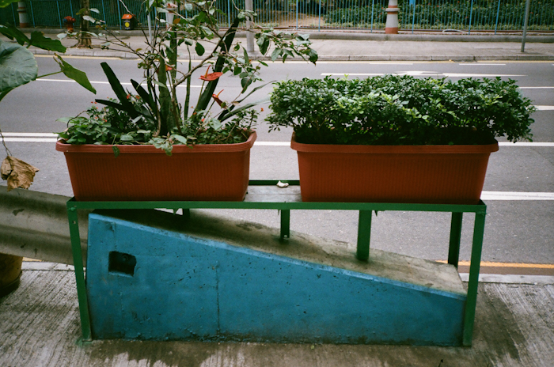
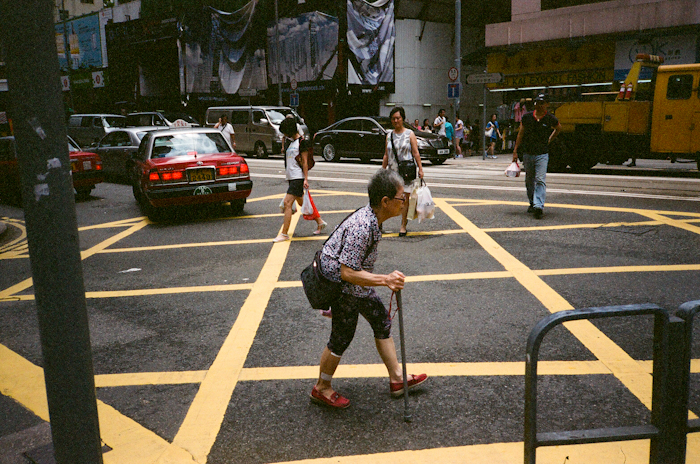

east west When Hong Kong Tramways was founded, the 26 tramcars of the first fleet were all single-deck. After more than 100 years, we now own and operate a fleet of 163 tramcars which includes 2 antique tramcars. It is the world's largest fleet of double-deck tramcars still in operation, carrying an average of 230,000 passengers every day.


Click on each circle to see a view from that tram stop